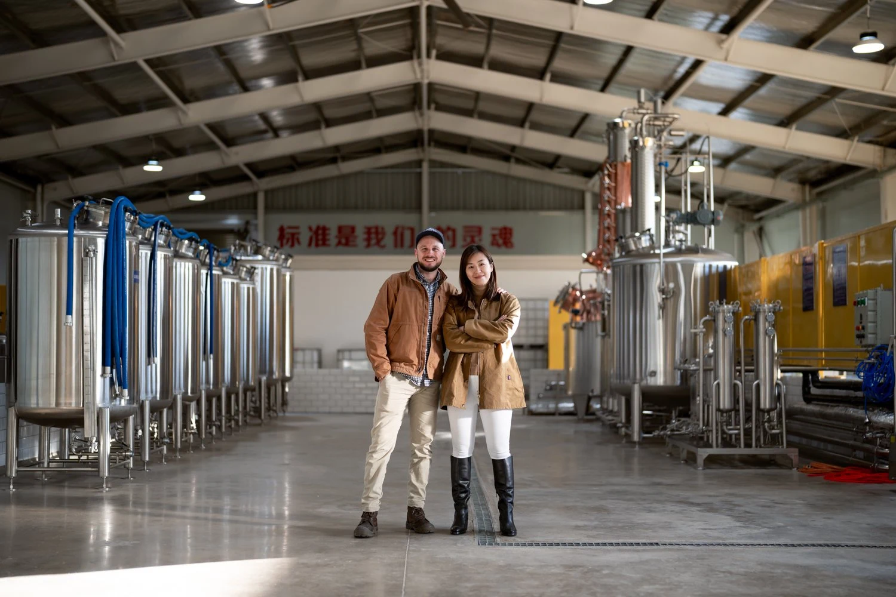
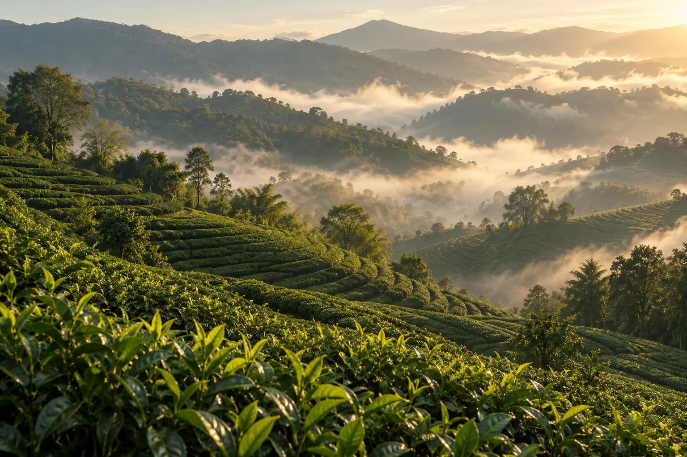

A journey west. A world of possibility.
In 2019, Mia and Fraser traded Shanghai for Yunnan. Her love of tea
met his brewing experience, and a new chapter began.
Chalu takes its name from the Tea Horse Road. Today, that journey
continues in every bottle.
Discover what makes us Chalu ↗

Two people, a shared curiosity.
Mia’s interest in tea and Fraser’s brewing background brought different perspectives to the same glass. Their move to Yunnan gave them a place to explore those ideas together.
Chalu carries that meeting of interests into a bottle made for the table. You can approach it as a tea lover, through the leaves and aromas, or start with the food you are planning to serve.
Pour it for someone who has never tried sparkling tea. Leave time to talk about what you both notice, and keep the bottle within reach for another glass.
A place at your table.
A bottle can mark the beginning of a meal before the first plate arrives. Chalu makes room for that moment in an alcohol-free glass, from a quiet lunch at home to a table filled with friends.
There is pleasure in the small details: choosing a glass, opening the cork, watching the bubbles rise. Those are moments to share, even when the occasion is simply that everyone is finally together.
Explore the four teas by the flavours that appeal to you. Each page offers a few dishes to try, with enough room to find a pairing of your own.
Meet the four teas ↗
Nature leads. Craft follows.
Continue from the people behind Chalu to the way the tea is made. Explore the role of the leaves, cold brewing and Yunnan oak, then take a closer look at the character of each expression.
The craft page offers a few ways to notice those details when you pour your first glass.
Explore the craft ↗